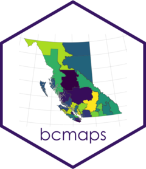

British Columbia watercourses at 1:5M scale
Source:R/get-non-catalogue-data.R
watercourses_5M.RdBritish Columbia watercourses at 1:5M scale
Usage
watercourses_5M(ask = interactive(), force = FALSE)Source
https://ftp.maps.canada.ca/pub/nrcan_rncan/vector/canvec/fgdb/Hydro/canvec_5M_CA_Hydro_fgdb.zip
See also
Other BC layers:
airzones(),
bc_bound(),
bc_bound_hres(),
bc_cities(),
bec(),
census_dissemination_area(),
census_dissemination_block(),
census_division(),
census_economic(),
census_metropolitan_area(),
census_subdivision(),
census_tract(),
ecoprovinces(),
ecoregions(),
ecosections(),
fsa(),
gw_aquifers(),
health_chsa(),
health_ha(),
health_hsda(),
health_lha(),
hydrozones(),
mapsheets_250K(),
mapsheets_50K(),
municipalities(),
nr_areas(),
nr_districts(),
nr_regions(),
regional_districts(),
tsa(),
water_districts(),
water_precincts(),
watercourses_15M(),
wsc_drainages()